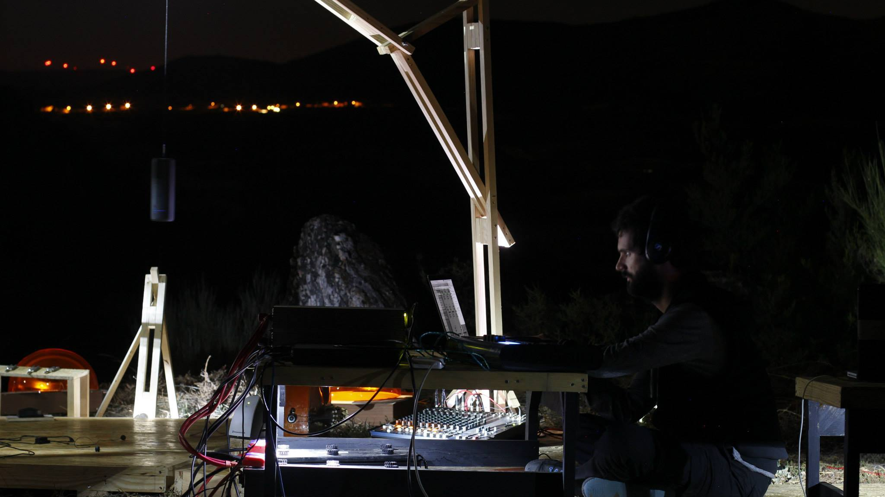

Animation Short Movie Directed by Emanuel de Oliveira and Ana Maria Marques
FORJA
Directed by André Jesus By EasyLab
NU#01
As palavras faladas e os sons vocais são presenças sensíveis activas em relação com paisagens e matéria Premiered at Convento São Francisco, Coimbra By Teatro do Frio
TRACTATUS NATURA #1
"TRACTATUS NATURA #1" is a work, both practical and theoretical, addressing what it means to be natural when doing music. It relates the human body, plants and interfaces Premiered at Vigo Commissioned by Vertixe Ensemble
OLD NEW TECHNOLOGIES #1
"OLD NEW TECHNOLOGIES #1" is a sound installations merging old and new technologies, focusing on a specific subject related to the use and impact of digital technologies within our society. Premiered at Braga during the Artech Conference (2019)
PROJETO #1
"PROJETO #1" is the first ORCA creation and consists of a robotic aggregate of sound objects controlled by original interfaces through a local network. This project proposes to generate an environment of performative collaboration involving robots, sound, image, multimedia and performers. Premiered at ESMAD
Variações sobre Espaço #4
For live electroacoustic music and flute Commissioned by João Vidinha Published by Scherzo Editions
Cimbalino is a short-movie based on a music composition By Take It Easy
LUSCO-FUSCO
Lusco-Fusco is a performance/theatre By Circular Associação Cultural
ECO
"ECO" is a performance that seeks to highlight non-aparent and non-casual beauty using music, sound, body, voice and the surrounding space Premiered at Gaia By Teatro do Frio
Variações sobre Espaço #3
Acousmatic music Premiered at Teatro Constantino Nery, Matosinhos
Variações sobre Espaço #2
For live electroacoustic music, flute, clarinet, piano, violin and violoncello Commissioned by Sond'Art-Te Electric Ensemble Premiered during at the IV Fórum for Young Composers, hosted in Teatro Municipal de Vila do Conde, Vila do Conde
Variações sobre Espaço #1
For live electronic music and soprano saxophone Soprano Saxophone: HENRIQUE PORTOVEDO Premiered at Casa da Música, Porto
MACABRE
No one will be admitted at the theatre after the beginning of MACABRE Premiered at Cinanima, Espinho By Easylab Studios
CONCERTO PARA ESTRELAS

"Concert for stars" is a musical performance specially conceived for places with little sound and light pollution Premiered at Crasto do Palheiro, Murça By Teatro do Frio
MEMÓRIAS DO FUNDÃO
An installation based on the sounds of Fundão Premiered at Casa da Música Commissioned by Sonoscopia Associação Cultural
VIRIATO
Viriato is a composition for jazz ensemble and it was comissioned by Porta-Jazz. Premiered at Edifício AXA Commisioned by Porta-Jazz
DO DESENHO E DO SOM #5
For euphonium, vibraphone, tape and Do Desenho e Do Som software Premiered at Alcobaça Commissioned by Inês Luzio
Re-Interpretação Urbana
Sound Installation by Filipe Lopes and José Alberto Gomes Premiered at Serralves Commissioned by Sonoscopia Associação Cultural
Do Desenho e do Som #4
for small ensemble, live electroacoustic music, Do Desenho e Do Som software Premiered at Auditório Vianna da Mota
Dédalo
Trapped inside the Space Freighter/Refinery DÉDALO, SIENA tries to survive an infestation of DIABOLIC CREATURES Premiered at MotelX Festival Commissioned by Easylab
Oco
OCO encara o corpo como instrumento musical, emotivo e sensorial. Pesquisa alcances da respiração e cartografa ressoadores do corpo em movimento. Commissioned by Teatro do Frio
Do Desenho e do Som #3
For harp, live electroacoustic music, Do Desenho e Do Som software Premiered and awarded (European Prize ECPNM for live electronic music) at Gaudeamus Festival, Utrecht
VEXATIONS
An installation based on Satie's Vexations Premiered and commissioned by Casa da Música
Do Desenho e do Som #1
For clarinet, live Electronics and Do Desenho e Do Som software Premiered at ESMAE, Porto
POLISphone
POLISphone is a versatile sound map. It starts in the Portophone mode but you can use your own image and sounds to create an original POLISphone.